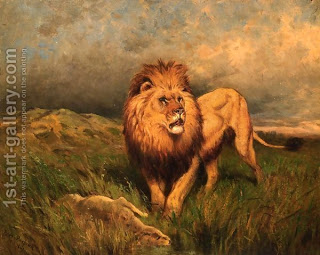

Brachot 3 - Night Watches
Rabbi Eliezer told us that the "Shema" may be said only during the first third of the night , or "the first watch." Why did he use this expression? - He wanted to tell us that there are "watches in heaven" and there are also "watches on earth," that is, there are spiritual changes during the night, which are reflected in propitious prayer and study times. At each and every watch the Holy One Blessed Be He sits and roars like a lion, as Jeremiah has said, "God will roar from on high... He will roar and roar over his lodging."
At the first watch a donkey brays, at the second - dogs howl, at the third - and infant nurses from his mother's breasts, and a woman talks to her husband. But why do we need these signs? We know when it is morning anyway? - If one is sleeping in a dark house, once a woman begins speaking with her husband - let his arise and say the Shema.
Rabbi Yose told a story. I once traveled on the road and entered a ruin of Jerusalem to pray. Elijah came and waited for me at the entrance. When I finished my prayer, he told me, "You should have prayed on the road." I learned then that one should not enter a ruin, and that one can pray a short prayer while on the road. He then asked, "What did you hear, my son?" I told him, "I heard a Heavenly voice that was cooing like a dove and saying, 'Woe to the sons because of whose sins I destroyed My house, burned my Temple, and exiled them among the nations of the world.'" Elijah told me "God says this not once but three times every day. And when the people enter synagogues and houses of study, the Holy One Blessed Be he shakes His head and says, 'Fortunate is the King who is praised in His house thus, what is there for the Father who exiled His sons, and woe to the sons who have been exiled from the Father's table."
Art: Rosa Bonheur - Lion and Prey